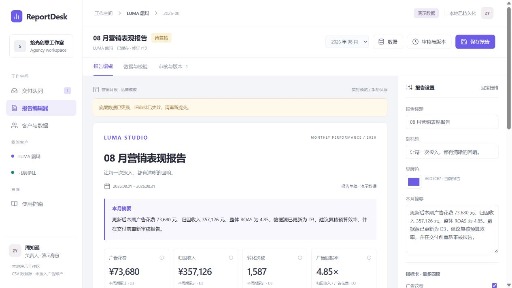

- 广告花费
- ¥66,240
- 归因收入
- ¥345,966
- ROAS
- 5.22×
原值、原口径、原哈希
真实运行截图。公开页展示界面回放；完整应用保留私有。
左侧切换客户，中央预览报告，右侧调整品牌、指标和说明。保存后进入审核。

这是这个项目最重要的设计问题。当前草稿和已批准报告分别保存：新数据触发重新审核，历史交付仍使用当时的数据、说明和品牌。
查看审核与版本界面原值、原口径、原哈希
必须重新提交审核
适用于客户月报、内部经营报告和固定口径报表的定制需求。
一份脱敏数据样表、指标定义、品牌素材，以及负责人怎样核对和批准报告。
可运行的工作台、完整源码、样例数据和启动说明，让交付能继续使用和维护。
先约定输入和预期结果，再逐项验证正常流程、异常反馈与版本一致性。
本案例已完成本地 CSV 工作流。广告 API、真实邮件、多人鉴权和线上部署属于后续项目中需单独约定并联调的范围。报告说明由人工编辑。
从 LUMA 切到北辰，核对各自的报告；点开指标口径，查看输入版本和公式。
上传缺字段或重复行 CSV，查看错误位置；恢复有效数据，检查映射和预览。
对照 D3 草稿和已批准 V1，再看 PDF。新数据需要重审，历史内容与哈希不变。